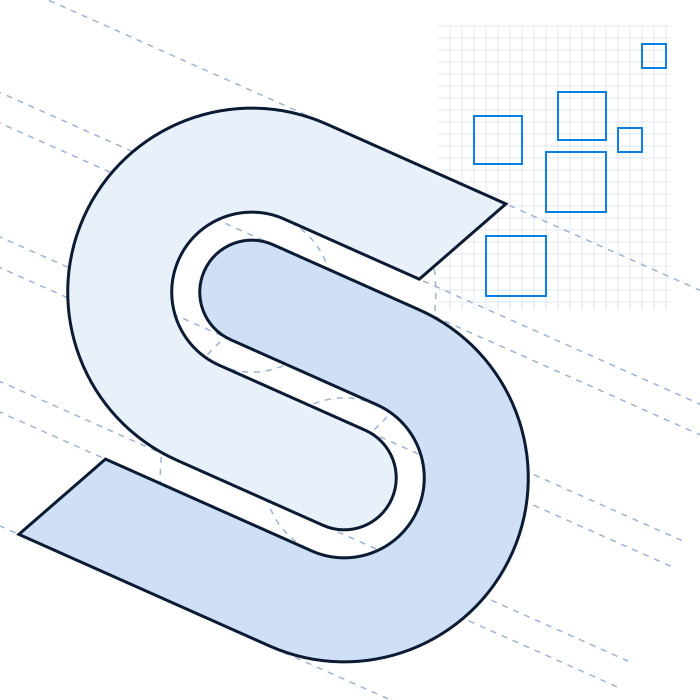

ShowMe logo · reference vs vector rebuild
Exploration · not liveJosh's reference (PNG)
Rebuild (SVG) · same tagline for comparison
Construction

What changed
- Two identical hooks, one turned 180°, with one even gap: that gap is the white S
- Every curve is a true arc; all four bands are the same width and run parallel
- Both cut ends at the same angle
- Pixel squares on a 12-unit grid in 3 sizes
- Shading cut to one crisp fold per bowl plus a soft glow
- Montserrat ExtraBold wordmark turned into outlines